5.2 Enfoques operacionalizables de clases y estratos sociales
En el Capítulo 2 repasamos brevemente algunas de las teorías más importantes en el campo del estudio de las clases y la estratificación social. En este apartado nos enfocaremos en el proceso que dichos investigadores atravesaron para llevar las clases de la teoría a los papeles (o bien, a la computadora). De esta forma, nos preguntamos:
- ¿Qué decisiones han tenido que tomar?
- ¿Qué limitaciones han encontrado en el pasaje de la teoría a lo empírico?
- ¿Qué variables utilizaron para llevar a cabo dicho trabajo? ¿Cómo las combinaron?
- ¿Qué limitaciones presentan las propuestas en función de las fuentes de datos disponibles en Argentina?
Como veremos el trabajo de desentrañar las decisiones que llevaron adelante los investigadores en la elaboración de esquemas y escalas de estratificación social no siempre es una tarea sencilla, y depende en gran medida de las huellas y directrices que los propios autores han dejado en sus trabajos acerca de cómo generar dichos constructos. Algunos han elaborado anexos, trabajos o publicaciones específicas en donde han señalado cómo construir dichos instrumentos. Otros, en cambio, han sido más ambiguos en sus formulaciones metodológicas, generando que aquellos interesados en la utilización de sus enfoques elaboren esquemas aproximados.
En este sentido, proponemos un repaso de las principales decisiones, criterios y características que asumen las clasificaciones más utilizadas tanto a nivel internacional como nacional en el estudio de las clases y la estratificación social. Vale decir que esta revisión lejos está de ser exhaustiva de todos los enfoques, por esta razón, hacia el final de este apartado listaremos algunas referencias para quien desee explorar en otros formatos clasificatorios.
5.2.1 Esquemas internacionales
5.2.1.1 Esquema EGP
El esquema EGP (Erikson, Goldthorpe, & Portocarero, 1979) es uno de los más utilizados, tanto en términos internacionales como regionales, para el estudio de la estructura de clases como de la movilidad social. John Goldthorpe fue quien se encargó de popularizarlo a través de sus investigaciones, llegando a ser utilizado, a partir de una adaptación, por la European Statistical Office como clasificación oficial (European Socio-economic Classification) 4.
Según el autor, el esquema no debe considerarse como un mapa definitivo de la estructura de clases, sino como un instrumento de trabajo que puede sufrir cambios y modificaciones. En la construcción del mismo, intervinieron tanto ideas teóricas como consideraciones prácticas que dependieron del contexto en el que tuvo origen, de los propósitos y de la naturaleza de la información sobre la que sería aplicado (Erikson & Goldthorpe, 1992, p. 32).
En referencia a los criterios operacionales que implica la construcción del esquema, se consideran (Méndez & Gayo, 2007, p. 146):
1. la propiedad de los medios de producción,
2. la existencia y número de empleados (para aquellos que no son asalariados),
3. la distinción no manual – manual – agrícola, y
4. el tipo de relación de empleo (de servicios o relación contractual).
En el siguiente esquema se detallan los principales criterios de clasificación y la asignación de las clases.
Figure 5.1: Derivación del esquema de clases EGP. Fuente: Erikson y Goldthorpe (1992)
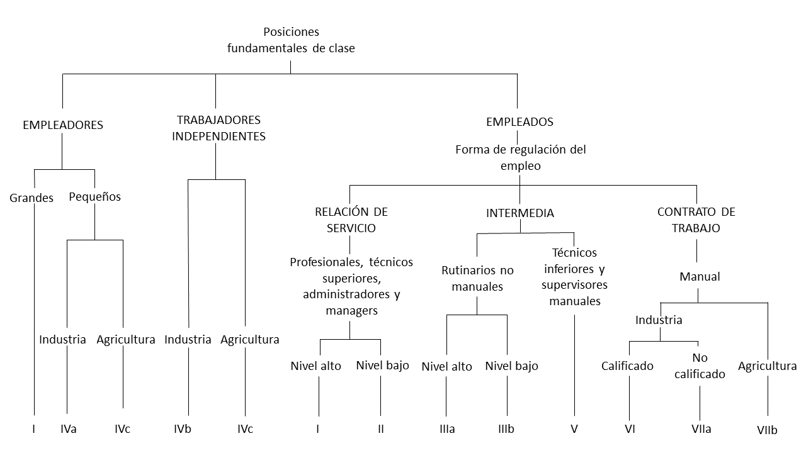De esta forma, la primera gran división ocurre a nivel de relaciones de producción, diferenciando entre empleadores (employers), trabajadores autónomos (self-employed workers) y empleados (employees). Para el caso de los empleadores se diferencia además según si presentan empresas grandes o pequeñas, así como por su rama de actividad (industria o agricultura), al igual que en los trabajadores autónomos. La operacionalización se complica al desagregar el mundo asalariado. Aquí interviene el criterio del tipo de relaciones de empleo.
La relación de servicio da lugar a lo que el autor denomina “clase de servicios” y que esta conformada por empleados profesionales, administradores y directivos. Los contratos suelen pautarse a largo tiempo y el modo de intercambio empleador-empleado suele ser difuso, en el sentido que no sólo actúa el salario como forma de pago, sino que también ciertos elementos prospectivos (aumentos, seguros sociales, pensiones, etc.) que garantizan la estabilidad y el sostenimiento del empleo. El empleado “de servicios” obtiene autonomía y discrecionalidad, dependiendo su rendimiento del “acuerdo moral” que existe con el empleador y no de sanciones externas. En contraposición, la relación basada en el contrato de trabajo, remite a lo que en términos agregados puede entenderse como “clase obrera”. A diferencia de la relación de servicio, los contratos suelen ser de menor término y se realiza un intercambio de dinero por esfuerzo, calculado en función de las horas trabajadas. La discrecionalidad y autonomía suelen ser bajas, ya que el rendimiento del trabajador está atado a una mayor supervisión sobre el mismo y a condicionamientos externos en forma de sanciones. En medio de ambos tipos ideales de relaciones, se encuentran las formas mixtas que dan lugar a las clases intermedias.
Por otro lado, las clases (identificadas en el gráfico anterior a partir de números romanos) pueden clasificarse de distintos modos, en función de cuán desagregada se desee presentar la información (Tabla ??). A nivel de mayor desagregación, el esquema cuenta con 11 clases, sin embargo los autores han trabajado con colapsamientos de 7, 5 y 3 clases.
Figure 5.2: Esquema de clases EGP. Fuente: Erikson y Goldthorpe (1992)
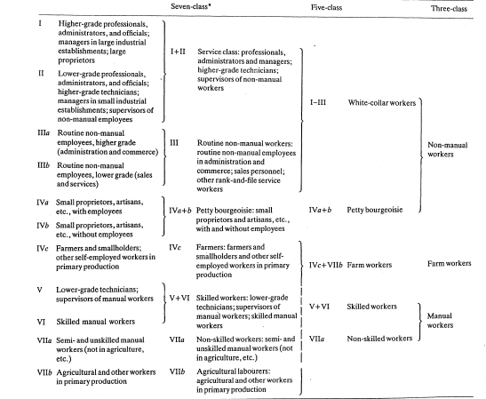Si bien existe bibliografía (Erikson & Goldthorpe, 1992; Rose & Harrison, 2007b) en la que se señalan algunos indicios sobre cómo operacionalizar el esquema EGP, no hay una forma directa y unívoca de realizarlo. Goldthorpe y Heath (1992) han realizado el ejercicio de operacionalización del mismo, pero para ser utilizado con la clasificación estandarizada de ocupaciones inglesa, que se diferencia tanto de la CIUO-88 como de la CIUO-08. A continuación mostramos una página de dicho trabajo donde se aprecia, en la primera columna, la clasificación ocupacional utilizada, mientras que en las siguientes se observan las otras variables utilizadas: carácter manual / no manual de la ocupación y categoría ocupacional (employment status). Cada celda representa una posible posición de clase, derivada de la combinación de categorías. Los números dan cuenta de a qué clase apunta cada combinación.
Figure 5.3: Tabla de operacionalización del esquema EGP original. Fuente: Goldthorpe y Heath (1992)
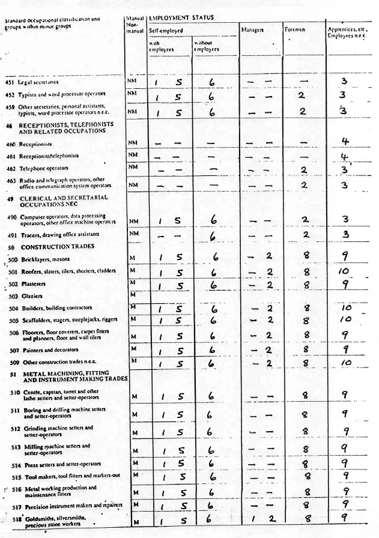Comúnmente, los investigadores interesados en utilizar la clasificación han partido de una adaptación realizada por Ganzeboom para SPSS 5, a partir del clasificador ocupacional CIUO-88. Existe un paquete para R llamado ocuppar, que retoma la propuesta de Ganzeboom para ser utilizada bajo dicho programa. En el apartado siguiente, a modo de ejemplo retomaremos dicha propuesta de operacionalización.
5.2.1.2 Esquema de Wright
Como hemos señalado en el capítulo 2, Wright ha presentado dos propuestas operacionalizables de clases, desde un enfoque neo-marxista: uno basado en las posiciones de las relaciones de clase y otro de las explotaciones múltiples. En este caso presentaremos los principales criterios abordados por el autor para el desarrollo de la segunda propuesta ^[La propuesta de operacionalización del enfoque de posiciones contradictorias puede encontrarse en Wright (1979).
Influenciado por el marxismo analítico, Wright identificó cuatro tipos de bienes de explotación posibles de ser relevamos empíricamente, y que se traducen en los diferentes tipos de derechos y poderes (recursos tangibles e intangibles) que tienen los sujetos en las relaciones de producción (Wright, 2005):
1. Fuerza de trabajo (explotación feudal),
2. Los medios de producción (explotación capitalista),
3. Los bienes de organización (explotación estatal) y
4. Las cualificaciones (explotación socialista)
De este modo, la combinación de esos cuatro tipos de bienes de explotación, permiten la generación de 12 posiciones de clase, tal como se observa en el siguiente gráfico:
Figure 5.4: Tipología de las posiciones de clase en la sociedad capitalista. Wright (1994)

Ahora bien, ¿Cómo llega Wright a operacionalizar dicho esquema? En este sentido, el autor es bastante franco y sincero ya que explicita todas sus decisiones y limitaciones, señalando que de este modo “los que lo deseen puedan repetir los resultados que aquí hemos presentado, y hará también que nuestras decisiones operacionales queden lo más abiertas posibles a la crítica” (Wright, 1994). Esto es de vital importancia en el campo científico, en donde la posibilidad de reproducir los resultados realizados en distintos contextos de investigación.
Es necesario aclarar que para abordar la estructura de clases desde el enfoque propuesto por Wright se torna crucial realizar un relevamiento que recabe ciertos indicadores específicos vinculados directamente con el enfoque teórico del que parte el autor 6. En este sentido, el proceso de operacionalización, si lo pensamos en términos inversos, es decir, desde los indicadores (variables brutas) a la variable que mide el sistema de clases, puede ser pensado del siguiente modo:
Figure 5.5: Pasos globales en la construcción de la tipología de clases. Wright (1994)
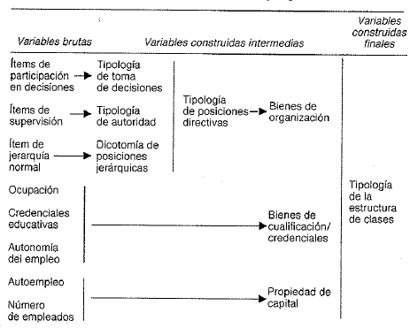Por ejemplo, tomando una de las dimensiones más complejas a ser medidas como los bienes de organización, el autor construye dos tipologías (de toma de decisiones y de autoridad) y una categoría dicotómica de posiciones jerárquicas que derivan luego en una tipología de posiciones directivas, Tabla ??.
Figure 5.6: Construcción tipología bienes de organización. Wright (1994)
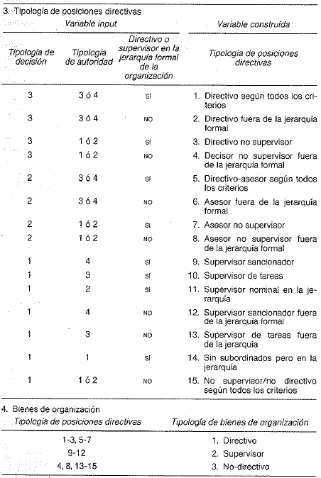Finalmente la tipología de bienes de organización, permite discriminar a las personas en función de si son directivos, supervisores o no-directivos. Como pudimos ver, para llegar a esa tipología, distintas operaciones complejas debieron realizarse desde los indicadores relevados hasta la construcción de tipologías intermedias.
5.2.1.3 Propuestas gradacionales
Los enfoques de tipo gradacional son tributarios del paradigma estructural-funcionalista que ha orientado a las ciencias sociales durante gran parte de la mitad del siglo XX. Dichas propuestas sostienen básicamente que partiendo de las características atributivas (ingresos, estatus, prestigio), los individuos son posicionados en un continuum en el que las fronteras de clase se tornan difusas. A diferencia de los enfoques (neo)marxistas o (neo)weberianos, estas propuestas de medición ponen el eje en el carácter jerárquico de las ocupaciones, principalmente en función de la importancia de las mismas en relación al conjunto del sistema social, el prestigio y las recompensas materiales que se derivan de las posiciones ocupadas (S. Ossowski, 2003; Parsons, 1954; Wright, 1979).
En términos operacionales, estas gradaciones pueden constituirse de forma simple o sintética en función de cuantas variables intervengan en su determinación. Asimismo, los aspectos a medir pueden tener una naturaleza objetiva o subjetiva (Cachón Rodríguez, 1989). Sin embargo, su utilización en estudios internacionales, no sólo se explica por su fundamentación teórica, sino también por las ventajas metodológicas que su utilización implica. Por un lado, son escalas de medición con un gran nivel de estandarización, por lo que pueden ser utilizadas a partir de la información socio-ocupacional relevada en todos los países. Por el otro, su carácter continuo garantiza la aplicabilidad de diversas técnicas frecuentemente utilizadas como regresiones lineales, path analysis o análisis factoriales.
De esta forma, si bien existe un número importante de enfoques gradacionales de ocupación, señalaremos brevemente dos de los más relevantes: la Standard International Occupational Prestige Scale (SIOPS) de Treiman y el Internacional Socio-Economic Index (ISEI) de Treiman, Ganzeboom y de Graaf (Bergman & Joye, 2001; Francés García, 2009). Ambos toman a la ocupación como el indicador principal del posicionamiento en la jerarquía social, pero mientras uno mide el prestigio de las ocupaciones, el otro cuantifica el estatus socioeconómico de las mismas.
El primero de estos (SIOPS), hace referencia a las clásicas escalas de prestigio ocupacional que, basadas en indicadores subjetivos, relevaron el grado de aprobación y respeto que presentaba un set de ocupaciones para las distintas personas. Según Treiman, los puntajes de prestigio obtenidos eran similares entre distintos sectores poblacionales (ricos o pobres, jóvenes o viejos) y entre distintos países del mundo. El prestigo, de este modo, era un proxy válido de la importancia funcional que las ocupaciones presentaban en la sociedad. En términos operativos, dicha escala recopila las puntuaciones medias de prestigio de aproximadamente 60 países, utilizando como base la CIUO-68. A continuación presentamos, a modo de ejemplo, las puntuaciones de 20 ocupaciones seleccionadas, entre las 509 rankeadas en total (Treiman, 1977).
Figure 5.7: Puntajes estandard ordenados de 20 ocupaciones seleccionadas a partir de la escala SIOPS. Treiman(1977)

Como puede observarse dentro de las ocupaciones más prestigiosas se encuentran la de “jefe de estado” y “alto oficial de policía”, mientras que las de menos puntaje están el “recolector de basura” y el “transportista de animales”.
La otra familia de escalas continuas de ocupación pueden representarse a partir del ISEI. En tanto índice socioeconómico, es construido a partir de información objetiva, específicamente de la suma ponderada de información de ingresos y del nivel educativo. Una primera versión de los índices elaborados con este método es el Socio-Economic Index (SEI) elaborado por Duncan en 1961 sobre la estructura ocupacional de Estados Unidos (Blau & Duncan, 1967; Duncan & Hodge, 1963). En particular, el SEI se construía a partir de un análisis de regresión en el que se consideraba el prestigio ocupacional de 45 ocupaciones de 1949 como variable dependiente y los ingresos medios y el nivel educativo como variables independientes, controlando por la edad. De este modo, con los resultados de la ecuación se podían estimar los puntajes de estatus de todo el rango de ocupaciones de la fuerza de trabajo. Para su construcción, Duncan utilizó los títulos de prestigio ocupacional presentes en el estudio sobre prestigio (NORC) de 1947 de North-Hatt y el censo de Estados Unidos de 1950. En la Tabla ?? se resumen algunas de las ocupaciones que conforman el SEI y su puntaje estimado.
Figure 5.8: Ranking ocupaciones según escala SEI. Blau y Duncan (1967)
Figure 5.9: Ranking ocupaciones según escala SEI. Blau y Duncan (1967)
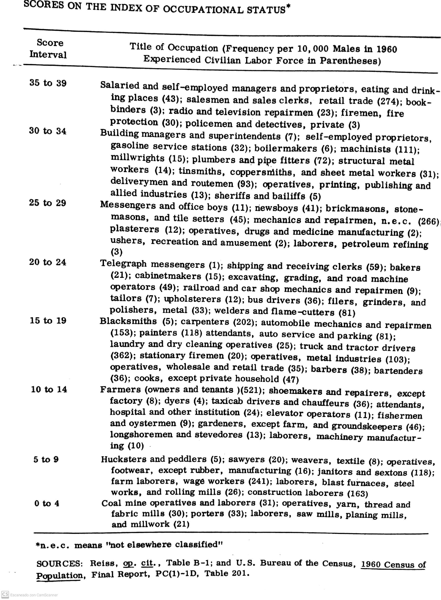Posteriormente, Ganzeboom, Treiman y de Graaf (1992) modificaron la ecuación de cálculo del SEI, considerando los efectos directos e indirectos de la educación, la edad y la ocupación sobre los ingresos, para elaborar el nuevo índice internacional. Asimismo, la construcción del ISEI implicó el uso 31 fuentes de información de 16 países entre 1968 y 1982. A diferencia de Duncan, estos autores no tuvieron en cuenta al prestigio de las ocupaciones durante la construcción del índice, que fue actualizado en dos ocasiones posteriormente. En la Tabla ??, se muestran los puntajes obtenidos a mayor y menor nivel de agregación para las primeras ocupaciones de la CIUO-68.
Figure 5.10: Puntajes del ISEI de las primeras ocupaciones de la CIUO. Ganzeboom, Treiman y de Graaf (1992)
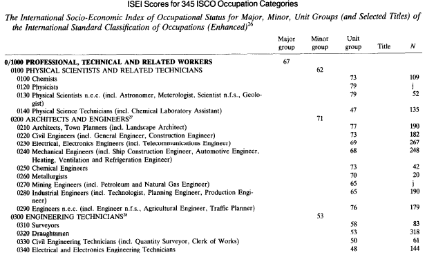Al igual que en el caso del esquema EGP, en la página de Harry Ganzeboom 7 puede encontrarse información y las sintaxis para SPSS de clasificación del ISEI y SIOPS partiendo de la CIUO-88. El paquete ocuppar para R también permite su construcción automática.
5.2.2 Esquemas nacionales
5.2.2.1 Propuesta de Germani
Gino Germani, además de ser reconocido como uno de los fundadores de la sociología académica argentina, fue uno de los pioneros en el estudio de las clases sociales a partir de información censal y de encuestas de hogares. Tal como señala Murmis (Germani, Germani, Mera, & Rebón, 2010) su enfoque ecléctico, estuvo influenciado tanto por la escuela marxista como por la funcionalista y por los estudios norteamericanos de estratificación social vinculados al análisis estadístico.
Centrándonos en sus libros y artículos más importantes (Germani, 1955, 1963, 2010) si bien su aproximación empírica a la cuestión se baso en el uso de esquemas de clases sociales, también ha utilizado escalas de nivel socio-económico (relevando diversos aspectos objetivos de la posición de los individuos) y escalas de prestigio. Sin embargo, aquí haremos un breve repaso de su propuesta de operacionalización de las clases sociales.
Para el autor, las clases sociales presentaban tres características centrales:
Eran formas de agrupación que tenían un rol central en el funcionamiento y organización de las sociedades;
no eran meras nominaciones científicas, sino que tenían una existencia sociológica real;
No podían explicarse únicamente a través de la información ocupacional, sino que deberían considerarse aspectos psicosociales y ligados al “tipo de existencia” de los individuos, aunque existan limitaciones en los datos para abordar dicha dimensión.
Asimismo, Germani señaló que su propuesta de operacionalización podía ser modificada y adaptada en el tiempo ya que era en vano buscar una discriminación neta de dichos agrupamientos debido a la complejidad de combinaciones entre criterios estructurales y psicosociales. Las clases, entonces, se definían a partir de un criterio espacial y probabilístico, es decir, como “zonas de la estructura social en la que cierta combinación de criterios se da con mayor frecuencia estadística” (Germani, 1955, p. 143).
Respecto al esquema de clasificación propuesto por el autor, el mismo recurre a “la convencional clasificación tripartita” de clase alta, media y popular (1955, p. 146). La clase alta, debido a su bajo peso poblacional, es incluida dentro de las clases medias. Asimismo, tanto las clases populares como las clases medias son desagregadas según sector de actividad (sector urbano y sector rural) y de acuerdo a su estatus ocupacional (trabajadores dependientes e independientes) (1955, pp. 146–147). La frontera entre ambas clases se basaba en la distinción manual / no manual del trabajo, existiendo una amplia heterogeneidad dentro de cada agregado (Tabla ??).
Figure 5.11: Esquema de clases de Gino Germani (Germani, 1955)
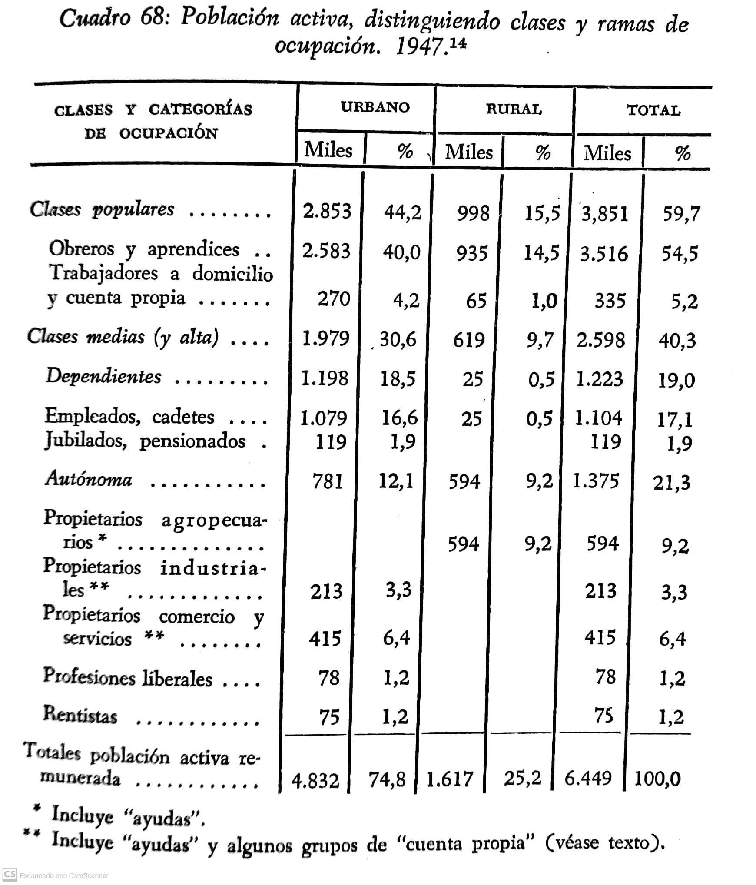Figure 5.12: Esquema de clases de Gino Germani (Germani, 1963)
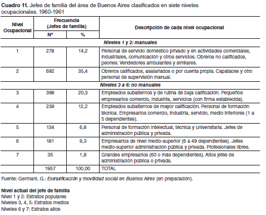5.2.2.2 Propuesta de Torrado
En tanto continuadora de la tradición inaugurada por Germani, Susana Torrado aportó un formato de medición específico para el análisis de la estructura de clases argentina. La propuesta de la autora tiene, al menos dos versiones operacionalizables: una primigenia, producto de su trabajo en colaboración con de Ipola (Ipola & Torrado, 1976) y una versión posterior, más acabada, que constituyó la base de su obra “Estructura social de la Argentina” (Torrado, 1992) y que fue resultado de diversas intentos de clasificación (CFI, 1988; Torrado & Rofman, 1988).
En palabras de la autora, su propuesta de esquema de clases mantenía un compromiso con tres de los principales enfoques de estratificación existentes: el “funcionalista”, que tiende a ofrecer una visión jerárquica de la estructura; el “materialista”, que define a las clases en función a las relaciones de producción y el “estadístico” o “pragmático” que hace hincapié en la utilización de categorías homogéneas que permitan comparabilidad de la información estadística (Torrado, 1998b).
Torrado acude a cinco variables que conformarán lo que podríamos denominar como el “esqueleto” de las clases sociales:
- la ocupación;
- la categoría ocupacional;
- el sector de actividad;
- el tamaño del establecimiento y
- la rama de actividad.
Particularmente la ocupación, captada a partir de la CIUO-68, es re-clasificada para conformar nueve grupos de ocupación (GO) (Tabla ??): 1) Empresarios, directores de empresas y funcionarios públicos superiores; 2) Propietarios de establecimientos; 3) Profesionales en función específica; 4) Técnicos, docentes y supervisores; 5) Empleados y vendedores; 6) Trabajadores especializados; 7) Trabajadores no especializados; 8) Empleados domésticos y 9) Sin especificar.
Figure 5.13: Cruce de variables socio-ocupacionales y generación de estratos socales (Torrado, 1998)
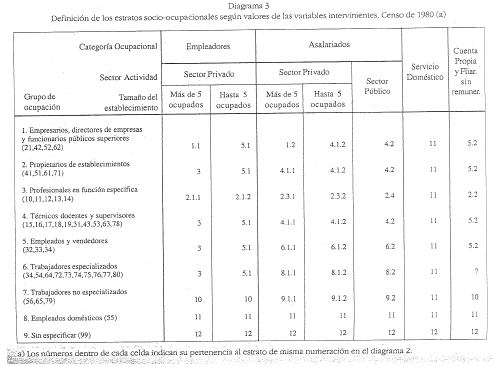De este modo, del entrecruzamiento de las distintas variables se genera una estratificación socio-ocupacional que presentamos a continuación (Tabla ??), y que da lugar al clasificador de la Condición Socio-Ocupacional (CSO) en su versión desagregada.
Figure 5.14: Nomenclador de la Condición Socio-Ocupacional desagregado (Torrado, 1998)
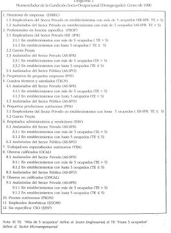En su versión agregada el nomenclador discrimina once estratos socio-ocupacionales, mientras que en su versión desagregada, dichos estratos son subdivididos en función del sector de actividad y la categoría ocupacional. Mientras que la ocupación, la categoría ocupacional y el tamaño del establecimiento, permiten establecer diferenciaciones verticales en la estratificación (formando, según la autora, capas sociales), la rama y el sector de actividad, permite diferenciar a los estratos en términos horizontales, es decir, en fracciones de clase. Finalmente, el nomenclador puede ser agregado en tres clases sociales (Tabla @ref(tab: torrado3)), definidas por la autora como clase alta, media y obrera, terminologías que “se relacionan más con la forma simbólica en que dichos colectivos existen en la cultura política argentina, que con una adhesión más explícita a algunas de las incontables teorizaciones existentes (…)” (Torrado, 1998b, p. 236).
Figure 5.15: Sistema clasificatorio de la clase social (Torrado, 1998)
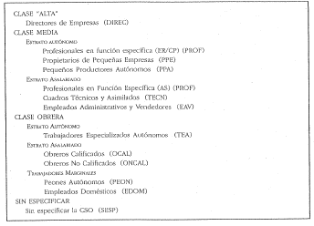